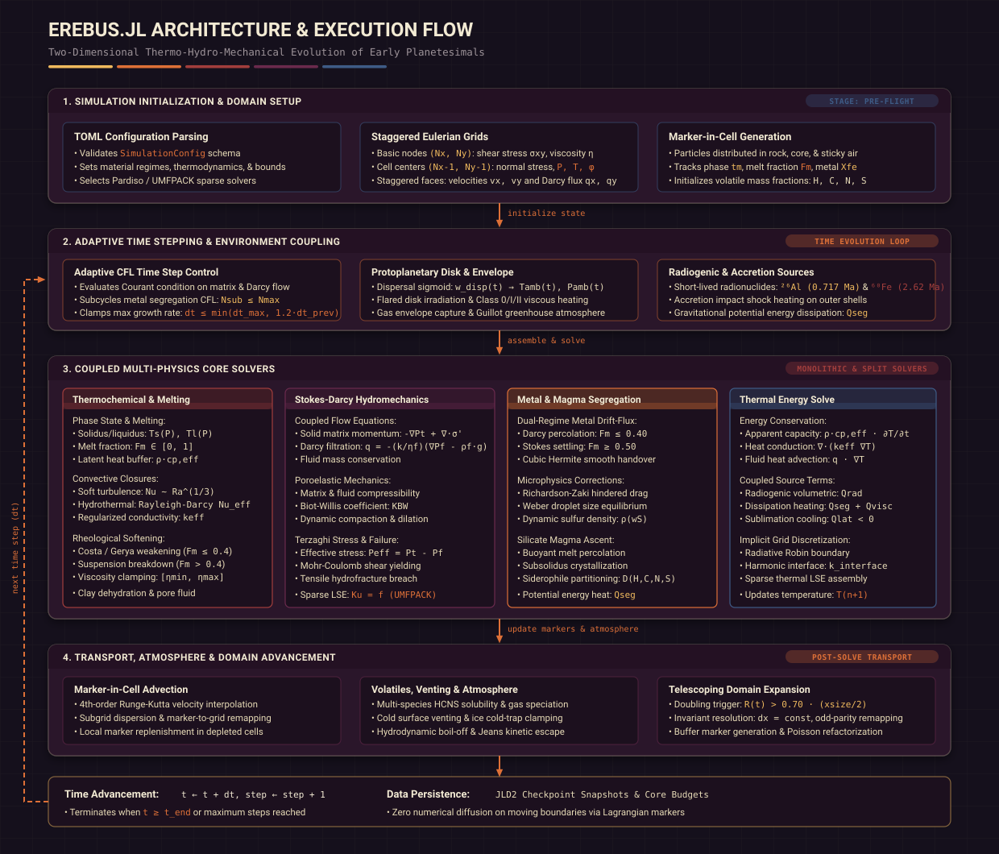

Erebus.jl
Two-Dimensional Thermo-Hydro-Mechanical Evolution of Early Planetesimals
Erebus.jl is a high-performance numerical simulation code developed in Julia for modeling the coupled thermo-hydro-mechanical evolution of porous planetesimals in the early Solar System. It solves the combined equations of solid Stokes matrix deformation, Darcy pore fluid percolation, poroelastic compressibility, and radiogenic heat transport on a staggered finite-difference grid coupled with a Marker-in-Cell (MIC) advection framework.
Key Physical Capabilities
Coupled Stokes-Darcy Flow: Simultaneous solution of viscous/visco-elasto-plastic solid matrix flow and Darcy fluid transport through a permeable, deformable porous medium.
Poroelastic Compressibility: Coupled solid matrix compressibility ($\beta_s$) and fluid compressibility ($\beta_f$) with dynamic drained compressibility ($\beta_d$), Biot-Willis coefficient ($K_{\text{BW}}$), and Skempton coefficient ($B$).
Terzaghi Effective Stress & Plasticity: Mohr-Coulomb yielding criterion and tensile cut-off formulated in terms of Terzaghi effective stress, capturing compaction, faulting, and pore fluid overpressure regimes.
Radiogenic Decay Kinetics: Time-dependent volumetric heating from short-lived radionuclides ($^{26}\text{Al}$ and $^{60}\text{Fe}$), driving water ice melting, hydrothermal circulation, and dehydration reactions.
Marker-in-Cell Advection: Conservative transport of composition, temperature, melt fraction, and porosity on moving lagrangian markers interpolated onto the Eulerian staggered grid.
Metallic Core Formation & Diapir Segregation: Coupled Darcy porous percolation of liquid Fe-FeS through solid silicate matrix, Stokes gravitational settling through magma oceans with Richardson-Zaki hindrance, Weber droplet breakup, dynamic density EOS, and gravitational dissipation heating.
Multi-Species Volatile Degassing & Atmospheric Escape: Coupled multi-component H-C-N-S volatile solubility, homogeneous gas speciation for ten species, graphite saturation clipping, chemical nitride dissolution under reducing conditions, cold surface venting, and hydrodynamic/Jeans kinetic atmospheric escape.
Reproducible TOML Configuration: Declarative simulation parameters structured by grid, geometry, timestepping, solver controls, poroelasticity, thermodynamics, materials, and output storage.
Architecture & Execution Flow
Erebus.jl couples Eulerian staggered finite-difference grids with Lagrangian Marker-in-Cell particles in an adaptive multi-physics execution pipeline:

Documentation Structure
The documentation follows the Diataxis framework, structured into learning, task, theoretical, validation, and reference categories:
Tutorials
Workflow-oriented guides taking you through a complete simulation run, hydrothermal circulation, differentiation, and growth to lunar mass.
How-To Guides
Task-oriented instructions for configuring simulation setups, tuning numerical solvers, and post-processing outputs.
Explanations
In-depth theoretical derivations of governing Stokes-Darcy equations, melting rheology, core segregation, and atmospheric loss.
Validation
Closed-form analytical benchmarks, grid convergence tests, and observational meteorite matching for all physical modules.
Reference
Technical specifications for all TOML configuration options, public API functions, and source literature citations.